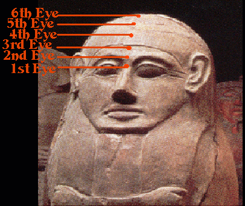

|  |
|
After meditating on your 3rd eye, visualize your 3rd eye brightening and shining outward like the sun and direct this energy to each of your psychic eyes, beginning with your 1st and 2nd psychic eyes and back to your third eye and up through your 4th, 5th and 6th eye points. You can then circulate the energy up and down as a stream of brilliant light.
Another technique which is somewhat advanced is to perform the chakra breathing through each of the centers. Draw energy into either one specific center at a time or do all simultaneously with each inhale. Visualize each center lighting up and upon each exhale, expand each center slightly, like a brilliant star. If you are working on all simultaneously, it is important to visualize all of them at the same time.
*Model is an Ancient Philistine Anthropoid Coffin.
BACK TO MAIN POWER MEDITATION PAGE
© Copyright 2005, Joy of Satan Ministries;
Library of Congress Number: 12-16457